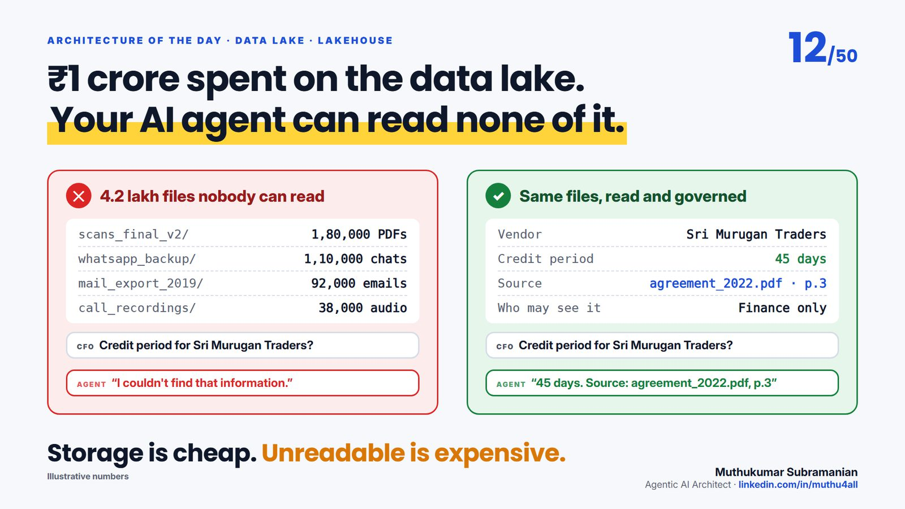

You Paid ₹1 Crore to Store Data Your AI Agent Can't Use.
By Muthukumar Subramanian · Agentic AI Architect

The CFO of a Chennai auto-parts distributor typed one question into the company's new AI agent:
"What credit period did we agree with Sri Murugan Traders?"
The agent replied: "I couldn't find that information."
The answer was sitting in their own data lake, on page 3 of a scanned agreement from 2022, in a folder called scans_final_v2. Next to it were 4.2 lakh other files: PDFs, email exports, call recordings, WhatsApp chats. Over five years the lake had cost them about ₹1 crore in storage, licences and the team that built it. (The company, the vendor and every number here are illustrative. The pattern isn't.)
They didn't have a data problem. They had a reading problem.
The architecture today
A data lake is the cheap basement of a company's data. You dump everything into object storage in its raw form and decide later what to do with it. A lakehouse adds a proper floor on top: open table formats like Apache Iceberg and Delta Lake turn files into tables with transactions, versions and a catalog, so dashboards and SQL can trust them.
That top floor works well for rows and columns. Sales, stock, ledgers.
Everything else stays in the basement as files. Invoices as scanned images. Contracts as PDFs. Customer complaints as call audio. Nobody parsed them, so nobody can query them. Analysts have repeated for years that most company data, 80% or more by the usual estimate, is unstructured. That's the part your AI agent needs most, and it's the part the lake never learned to read.
👉 [IMAGE: A-day12-2-in-article-architecture.png]
Caption: The lake you already have, plus one new lane that reads files into governed tables. Grey is what you already have. Amber is new.
Where AI plugs in now: a reading lane, one folder at a time
Don't point an agent at the whole lake. Add a reading lane beside it:
→ Parse. A document model reads each PDF, scan or recording and pulls out the fields that matter: vendor, credit days, amount, date, page number.
→ Tag. Every extracted row keeps its source file, its owner, who may see it, and whether the person in it consented to this use.
→ Index. The text gets chunked and embedded for search, and the fields land in a normal lakehouse table.
Start with one folder that has a clear owner and a clear payoff. Vendor agreements are a good first pick: finance asks about them every week, and a wrong answer costs real money.
Now the agent's answer changes: "45 days. Source: agreement_2022.pdf, page 3." An answer without a source is a rumour.
Where it's heading with agents
In two or three years, I expect the lakehouse to become the agent's long-term memory. One catalog will govern tables, files, embeddings and agent access together. When an agent reads a contract, the catalog will know which agent, for which user, under which permission. When an agent finds something, say a duplicate vendor, it'll write it back as a table with lineage, not a chat message nobody can audit.
The person who decides what the agent may read is becoming a role of its own. Some companies call it a Context Engineer: the one who picks which documents go in, how they're split, what's off-limits, and how fresh they must be. On the delivery side, a forward deployed engineer (FDE), someone who sits with the customer's team and ships on their real systems, finds which folders actually matter. Those titles are still settling. The work isn't.
👉 [IMAGE: A-day12-3-in-article-triage.png]
Caption: Not every file deserves to be read by an agent. Parse it, park it, lock it or delete it. Illustrative examples.
Watch it work
Raw files go into the lake, get parsed, tagged and indexed, and then one question pulls one answer with its source.
👉 [GIF: A-day12-4-in-article-dark-to-searchable.gif]
Caption: From 4.2 lakh unreadable files to an answer with a page number. All figures illustrative.
What could go wrong
This is where most dark-data projects get hurt.
→ Permissions don't survive parsing. The PDF sat in a folder only HR could open. Its embedding sits in an index everyone's agent can search. Now a salary letter is one clever question away. Copy the permission onto every chunk, or don't parse it.
→ Consent. A recording made to resolve a complaint wasn't collected so an agent could mine it. India's DPDP Rules were notified in November 2025 and phase in over 18 months, with most obligations applying from May 2027. If personal data is in the folder, ask your legal team before you parse it, not after.
→ Bad scans, bad answers. Handwritten notes, faded thermal bills and Tamil-English mixed documents still trip up extraction. Keep the page number so a person can check.
→ Old versions. Three drafts of the same agreement, all parsed. The agent quotes the wrong one with full confidence.
Pros
→ You reuse storage you've already paid for, so there's no new lake and no migration
→ One governed copy serves both dashboards and agents, with lineage
→ Answers come with a source and a page, which is what auditors and CFOs ask for first
Cons
→ Parsing millions of files costs real money and time, and re-parsing when models improve costs it again
→ Access control on unstructured data is hard and easy to get wrong
→ Most dark data is junk, and parsing junk only makes junk searchable
That last one is my contrarian take: for many companies, the best AI data strategy starts with a delete button.
The opportunity
Every mid-size company, CA firm, hospital and insurer in India has a basement like this. They've paid to store it. Nobody has paid to make it readable, governed and safe for agents.
That's the market: dark data to governed knowledge. Sell it folder by folder, not as a big-bang platform. "Your vendor agreements, searchable by your finance agent, with sources and permissions, in 30 days." Then claims files. Then complaints. Each folder is a fixed-price project with a visible payoff, and the triage itself, deciding what to parse, park, lock or delete, is a consulting service on its own.
Tools to try
Databricks, with Unity Catalog volumes for governed files · Apache Iceberg tables on Amazon S3 Tables, Microsoft Fabric OneLake or Google BigLake · Unstructured.io to parse PDFs and scans · a vision-capable model to read invoices: Claude, Gemini, GPT or an open model · vector search close to the data, such as pgvector or your lakehouse's own.
Your turn 👇
Your oldest 4 lakh files: parse them or delete them? One word.
Tag the person in your team who knows which folder the real contracts are in.
Day 12 of 50 · follow along. Tomorrow: Day 13 · Last Night's Data Job Failed. Your AI Agent Answered Anyway.